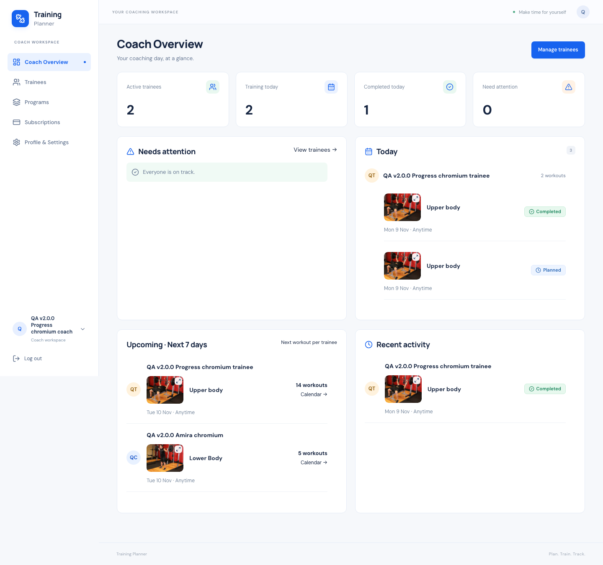
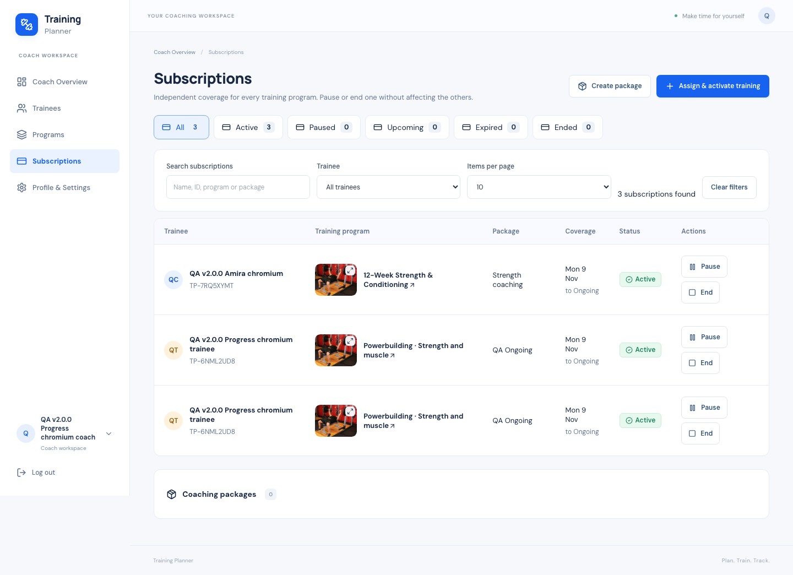
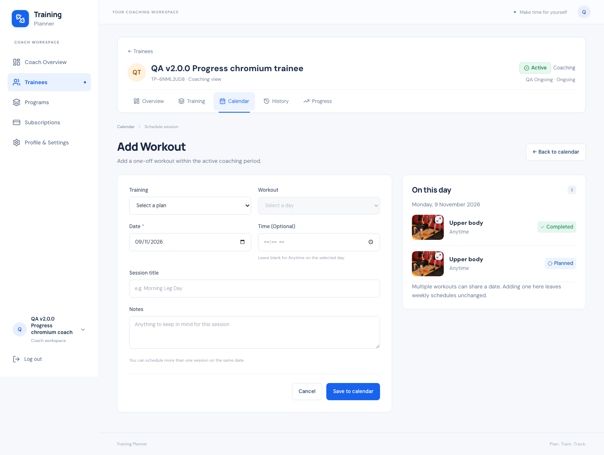
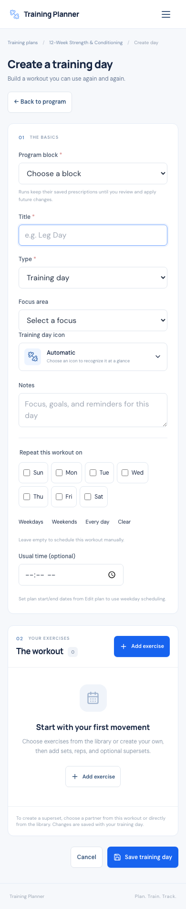

1. Release and baseline
v2.5.0 extends the live v2.4.0 Laravel / Inertia / React application. This release combines the requested workspace improvements with independent coverage for each assigned training program. Earlier tags remain unchanged.
Release commit: Recorded after the immutable release commit is created.
2. What changed
| Area | Delivered |
|---|---|
| Subscriptions | Visible sidebar entry; searchable, filtered, paginated table; responsive cards; program, trainee, package, coverage, status and controls. |
| Independent programs | Each assignment has its own subscription periods. Multiple programs can run at once under one or several coaches. |
| Settings | Profile, account preferences and Notifications & app tabs with breadcrumbs and Back navigation. |
| Training builder | Add/Edit Training Day opens a full page. Saving and Back return to the same builder and trainee context. |
| Add Workout | Full-page scheduling with a bounded day agenda, thumbnails and Calendar return. |
| Overview | Four equal-height scrollable panels; larger thumbnails; up to 100 attention/activity rows. |
| Programs | List, search, counts and 10 / 25 / 50 / 100 page sizes; Coach default 10. |
| Calendar | Stable program colours, visible labels and clickable legend filters; status indicators remain separate. |
3. The daily coach journey
Open a trainee → Assign & activate training → choose a program → review dates and program-specific coverage → confirm. New assignments default to today; activation never waits for another program to finish. Weekly workout dates still follow the reviewed schedule.
4. Independent coverage
The assignment points to its current subscription; each subscription period also records its assignment. Pause, resume and end operate on the selected period. Coverage from another program cannot authorize editing or scheduling. Separate coaches retain separate ownership and cannot view or change each other’s assignments.
5. Renewal and history
Renewing an ended or expired subscription creates a new historical period for the same assignment. It reuses an existing run and its workouts instead of restarting the program. Ended assignments lead to an explicit new assignment. Old periods and recorded workout history remain intact.
6. Existing subscriptions and migration
One additive migration adds nullable coach_plan_assignment_id to coach_subscriptions. Existing shared periods are split across their linked assignments. Original periods stay in place; copies retain dates, package, status, notes and timestamps. Only the subscription scope and affected assignment coverage links change. No plan, run, workout or media is recreated. Downgrade does not merge or delete periods.
7. Atomic activation and access
The existing relationship/user locks, signed preview, draft revision, activation token and transaction coordinator are preserved. Program copy, subscription binding and scheduling commit together. Failure rolls back database writes and copied media. Replayed activation returns the same result. Trainee consent and CoachAccess remain authoritative; trainees cannot enable Coach Workspace or write Coach endpoints.
8. Pause semantics
Pausing or ending a subscription stops that coach’s management of that program and its future schedule generation. Other program subscriptions remain active. Existing trainee-owned plans, already scheduled workouts and completed history are retained. Program pause remains a separate lifecycle action.
9. Navigation and editors
Notifications now sit inside Settings in both workspaces. The Coach settings route never switches to Personal Workspace. Full-page day editing avoids a long nested dialog and preserves the existing exercise library, image preview, supersets and upload controls. Exercise dialogs can use 1,040px desktop width and still fit small phones.
10. Lists, cards and Calendar
Overview panels are 440px high on desktop and 390px on phones, with keyboard-focusable internal scrolling. A 100-row stress check confirms the panel height stays fixed. Desktop thumbnails are 88×66px. Calendar colour is derived from program identity and is accompanied by program text; completed/skipped status continues to use its existing indicator.
11. UI evidence
Screenshots use disposable QA accounts. Browser emulation covers responsive layouts; no physical-phone test is claimed.




12. Automated release gates
| Check | Result |
|---|---|
| pint | PASS · 1.28s |
| prettier | PASS · 0.41s |
| sqlite | PASS · 14.27s |
| mysql | PASS · 35.92s |
| javascript | PASS · 0.25s |
| build | PASS · 1.67s |
| composer-validate | PASS · 0.15s |
| composer-audit | PASS · 1.17s |
| composer-platform | PASS · 0.14s |
| diff | PASS · 0.02s |
SQLite: 642 tests / 12,692 assertions. Isolated MySQL: 642 tests / 12,692 assertions. JavaScript: 38 tests. Composer audit: zero advisories or abandoned packages. Build, Pint, Prettier, Composer validation/platform checks and git diff check pass.
13. Concurrency
| Real-process suite | Passed checks |
|---|---|
| Coaching | 17 |
| RecurringSchedule | 4 |
| Program | 10 |
| ProgramControl | 15 |
| Notification | 10 |
| CoachSetup | 53 |
| WeeklySchedule | 5 |
114 checks include two simultaneous activations, stale revisions, pausing program A while activating program B, double Resume and double Renew. Exactly one reviewed result is committed; other subscriptions, runs and sessions remain unchanged.
14. Browser regression
| Suite | Engine | Checks |
|---|---|---|
| independent-subscriptions | chromium | 89 |
| independent-subscriptions | webkit | 89 |
| coach-journey | chromium | 84 |
| coach-journey | webkit | 84 |
| coach-desktop-workspace | chromium | 173 |
| coach-desktop-workspace | webkit | 173 |
| coach-journey-coverage | chromium | 12 |
| coach-journey-coverage | webkit | 12 |
| thumbnail-preview | chromium | 75 |
| thumbnail-preview | webkit | 75 |
| thumbnail-coverage | chromium | 63 |
| thumbnail-coverage | webkit | 63 |
| pwa-live | chromium | 20 |
| pwa-live | webkit | 19 |
1,031 checks across 14 successful browser runs. Widths include 320×480, 360, 375, 390, 430, 768, 1280, 1366, 1440, 1920 and 2560 where applicable. Tested complete creation, trainee-first return, assignment, coverage extension, renewal/resume, weekly editing, manual scheduling, filters, image previews, Personal pages and actual service-worker behavior.
15. Database, failure and security tests
Focused tests cover same-coach and cross-coach subscriptions, forged IDs, unauthorized trainee writes, program-specific date coverage, rollback after schedule failure, migration of shared coverage, new-assignment date defaults and Settings context. The complete pre-existing suite retains media-failure, stale-preview, revoked-consent, lifecycle, History, Progress, PWA and notification checks.
16. Local cleanup
Removed 14 disposable accounts and 137 QA images. All 22 original table fingerprints match the verified post-migration baseline, and all 44 original local media hashes match. The migration’s intentional scope/link changes are tested separately.
17. Production deployment
NOT READY — local release gates passed; production deployment and live verification are still pending.
Deployment uses the immutable tag, fresh database/runtime/uploads/environment backups, baseline release hashes, only the one pending migration, exact coverage-preservation checks, live disposable accounts and post-cleanup data/media/environment verification.
18. PWA and notifications
Existing manifest, service worker, public-only asset cache, offline fallback, preference persistence and private no-store responses are preserved. No Push credentials are generated and no scheduler is enabled by this release. Push delivery remains disabled unless separately configured and approved.
19. Known limits
Subscriptions are coaching-service coverage, not billing or payment processing. Program colours are stable automatic colours, not a custom palette editor. A subscription pause does not erase existing sessions. Browser checks use Chromium and WebKit with responsive viewports; real Push delivery and physical-device installation are not claimed.
20. Changed source
-
app/Http/Controllers/CoachConnectionController.php -
app/Http/Controllers/CoachController.php -
app/Http/Controllers/CoachScheduleController.php -
app/Http/Controllers/CoachSetupController.php -
app/Http/Controllers/CoachSubscriptionController.php -
app/Http/Controllers/NotificationController.php -
app/Http/Controllers/ScheduleChangeController.php -
app/Http/Controllers/ScheduleEntryController.php -
app/Http/Controllers/TrainingDayController.php -
app/Http/Controllers/TrainingPlanController.php -
app/Http/Middleware/HandleInertiaRequests.php -
app/Http/Requests/StoreScheduleEntryRequest.php app/Models/CoachPlanAssignment.phpapp/Models/CoachSubscription.phpapp/Services/CoachAccess.phpapp/Services/CoachSetup.phpapp/Services/CoachWorkspaceSummary.phpapp/Services/CoachingSubscriptions.phpapp/Services/ExerciseProgression.phpapp/Services/PlanSchedule.phpapp/Services/ProgramControl.phpapp/Services/ProgramSchedule.php-
app/Services/TrainingPlanDuplicator.php -
database/migrations/2026_11_09_000016_scope_subscriptions_to_program_assignments.php resources/css/app.cssresources/css/coach-workspace.cssresources/js/Components/AppLayout.jsx-
resources/js/Components/SettingsNav.jsx -
resources/js/Features/CoachWorkspace.jsx -
resources/js/Features/ScheduleEntryForm.jsx -
resources/js/Features/SubscriptionTable.jsx resources/js/Features/programColors.jsresources/js/Pages/Calendar/Index.jsx-
resources/js/Pages/Coach/ManageCoaching.jsx resources/js/Pages/Coach/Overview.jsx-
resources/js/Pages/Coach/ProgramBuilder.jsx -
resources/js/Pages/Coach/SetupTrainee.jsx -
resources/js/Pages/Coach/Subscriptions.jsx resources/js/Pages/Coach/Trainee.jsxresources/js/Pages/Coaching/Index.jsxresources/js/Pages/Coaching/Setup.jsx-
resources/js/Pages/Notifications/Index.jsx resources/js/Pages/Profile/Edit.jsxresources/js/Pages/Profile/Show.jsx-
resources/js/Pages/ScheduleEntries/Form.jsx -
resources/js/Pages/TrainingDays/Form.jsx -
resources/js/Pages/TrainingPlans/Index.jsx routes/web.php-
tests/Browser/coach-desktop-workspace.mjs tests/Browser/coach-journey.mjs-
tests/Browser/independent-subscriptions.mjs tests/Browser/thumbnail-coverage.mjs-
tests/Concurrency/CoachSetupConcurrency.php tests/Feature/CoachJourneyTest.php-
tests/Feature/IndependentProgramSubscriptionsTest.php
21. Status
SUPERSEDED — see V2.5.1-PROGRAM-SUBSCRIPTIONS-WORKSPACE-REPORT.html for the completed release.